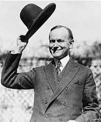
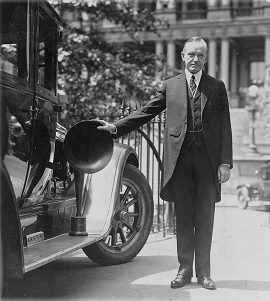
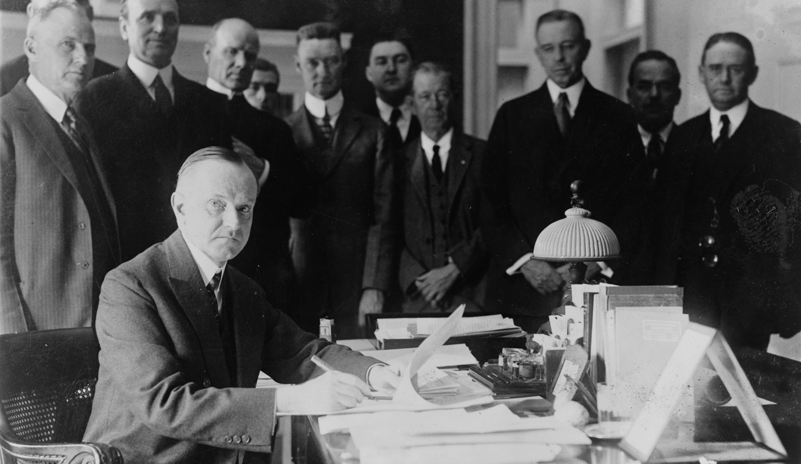
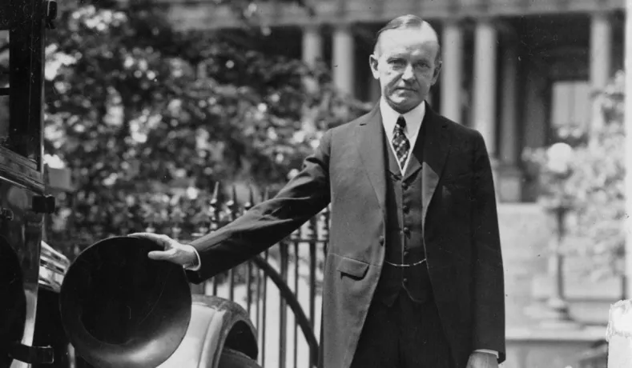

Don’t expect to build up the weak by pulling down the strong.
— Calvin Coolidge
- Beginnings -
Republican Calvin Coolidge was elected mayor of Northampton,
Massachussetts, in 1909, and became senator (in 1911) and lieutenant
governor (in 1915) of Massachussetts. After this, he was elected
governor of Massachussetts in 1918. He became famous when he quelled
the violence of the Boston Police Strike, subsequently refusing to
let those striking back into the workforce, famously saying, "There
is no right to strike against the public safety of anybody,
anywhere, any time."

Calvin Coolidge
- Election -

Calvin Coolidge by a Fancy Car
Republican Calvin Coolidge ran as Warren G. Harding's
vice-presidential running mate. Coolidge and Harding's policy
approach was very similar at the time, and both were members of the
"Old Guard Republicans", promising the 'return to normalcy'.
Together they won by the greatest margin seen yet, defeating James
Cox and Franklin Delano Roosevelt by 60% to 34%. The electoral vote
was 404 Harding + Coolidge to 127 Cox + Roosevelt.
- Presidency -
Harding died on August 2nd, 1923, leading Coolidge the presidency.
Coolidge was sworn in by his father, John Calvin Coolidge Sr., on
August 3rd. After the Harding administration, Coolidge was left with
a scandal-mired government, having had no knowledge of the TeaPot
Dome Scandal. He delicately removed those associated and those
guilty from power, and gradually "restored integrity" to the
Executive Branch, giving the public the sense that the government
was in trustworthy hands.

Calvin Coolidge as President
- Presidency Continued -

Calvin Coolidge Outside
Coolidge was nominated to run in 1924 by the Republican Party, and
again won a landslide over Democrats John W. Davis and Progressive
Robert La Follete. Coolidge's policy of business resonated with the
American People, and he cut taxes on income and property. However,
under his presidency farmers and agricultural workers faced
financial hardship, and Coolidge also vetoed a bill offering a bonus
to WWI veterans, but the veto was overridden. Coolidge was also
opposed to the US joining the League of Nations.